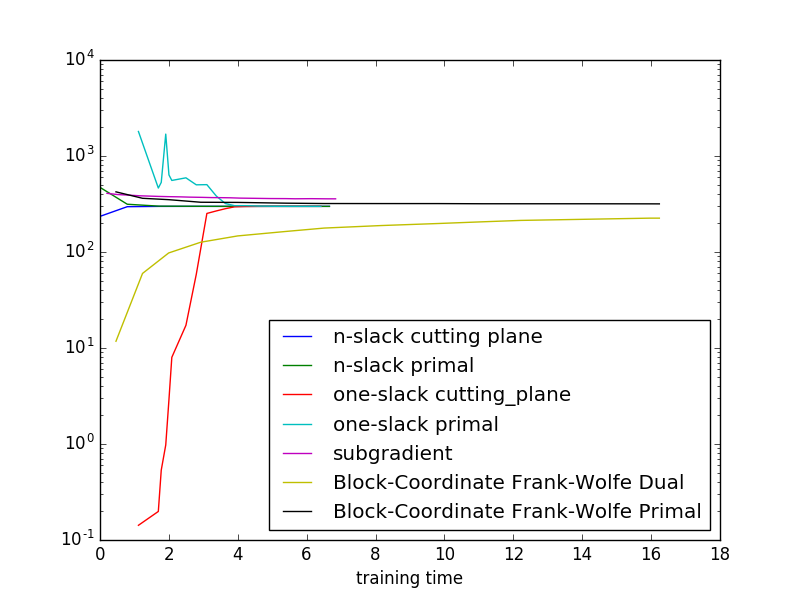

Showing the relation between cutting plane and primal objectives, as well as the different algorithms. We use exact inference here, so the plots are easier to interpret.
As this is a small toy example, it is hard to generalize the results indicated in the plot to more realistic settigs.
import numpy as np
import matplotlib.pyplot as plt
from pystruct.models import GridCRF
from pystruct.learners import (NSlackSSVM, OneSlackSSVM, SubgradientSSVM,
FrankWolfeSSVM)
from pystruct.datasets import generate_crosses_explicit
X, Y = generate_crosses_explicit(n_samples=50, noise=10, size=6, n_crosses=1)
n_labels = len(np.unique(Y))
crf = GridCRF(n_states=n_labels, inference_method=("ad3", {'branch_and_bound': True}))
n_slack_svm = NSlackSSVM(crf, check_constraints=False,
max_iter=50, batch_size=1, tol=0.001)
one_slack_svm = OneSlackSSVM(crf, check_constraints=False,
max_iter=100, tol=0.001, inference_cache=50)
subgradient_svm = SubgradientSSVM(crf, learning_rate=0.001, max_iter=20,
decay_exponent=0, momentum=0)
bcfw_svm = FrankWolfeSSVM(crf, max_iter=50, check_dual_every=4)
#n-slack cutting plane ssvm
n_slack_svm.fit(X, Y)
# 1-slack cutting plane ssvm
one_slack_svm.fit(X, Y)
# online subgradient ssvm
subgradient_svm.fit(X, Y)
# Block coordinate Frank-Wolfe
bcfw_svm.fit(X, Y)
# don't plot objective from chached inference for 1-slack
inference_run = ~np.array(one_slack_svm.cached_constraint_)
time_one = np.array(one_slack_svm.timestamps_[1:])[inference_run]
# plot stuff
plt.plot(n_slack_svm.timestamps_[1:], n_slack_svm.objective_curve_,
label="n-slack cutting plane")
plt.plot(n_slack_svm.timestamps_[1:], n_slack_svm.primal_objective_curve_,
label="n-slack primal")
plt.plot(time_one,
np.array(one_slack_svm.objective_curve_)[inference_run],
label="one-slack cutting_plane")
plt.plot(time_one,
np.array(one_slack_svm.primal_objective_curve_)[inference_run],
label="one-slack primal")
plt.plot(subgradient_svm.timestamps_[1:], subgradient_svm.objective_curve_,
label="subgradient")
plt.plot(bcfw_svm.timestamps_[1:], bcfw_svm.objective_curve_,
label="Block-Coordinate Frank-Wolfe Dual")
plt.plot(bcfw_svm.timestamps_[1:], bcfw_svm.primal_objective_curve_,
label="Block-Coordinate Frank-Wolfe Primal")
plt.legend(loc="best")
plt.yscale('log')
plt.xlabel("training time")
plt.show()
Total running time of the script: (0 minutes 38.959 seconds)
Download Python source code: plot_ssvm_objective_curves.py